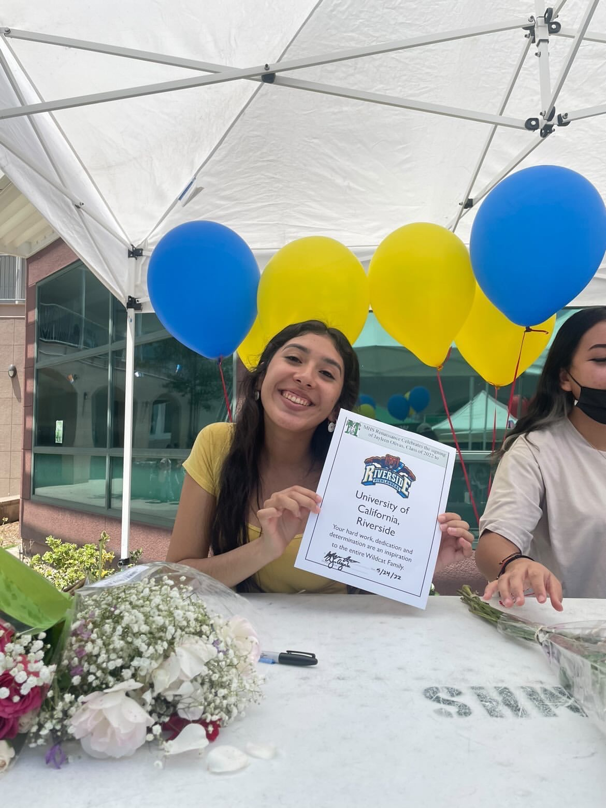
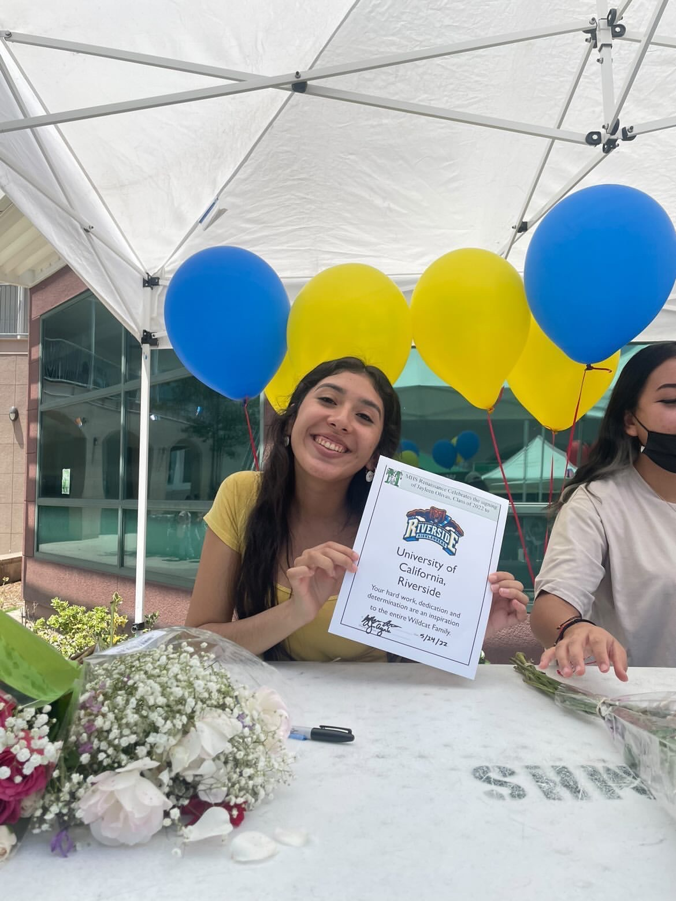
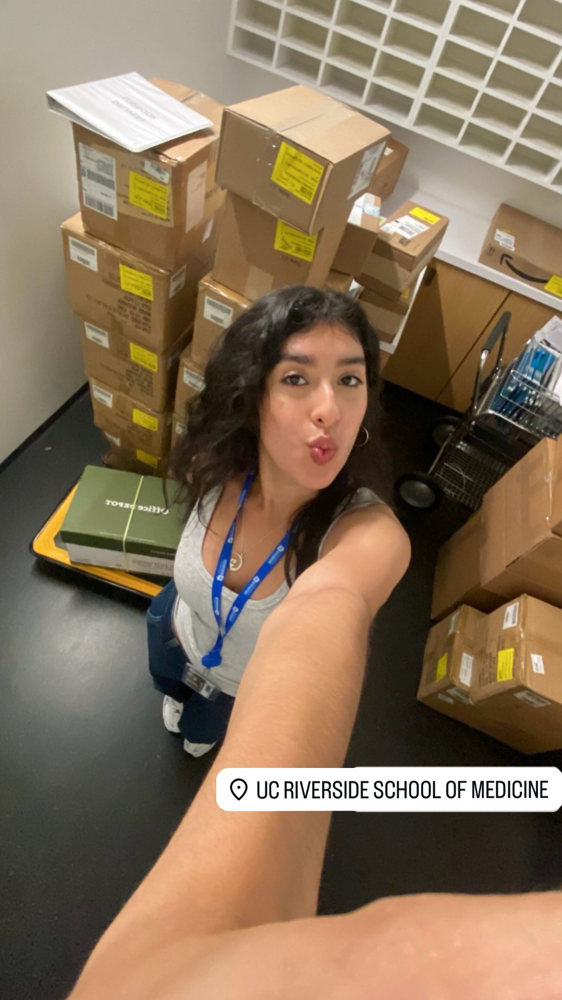
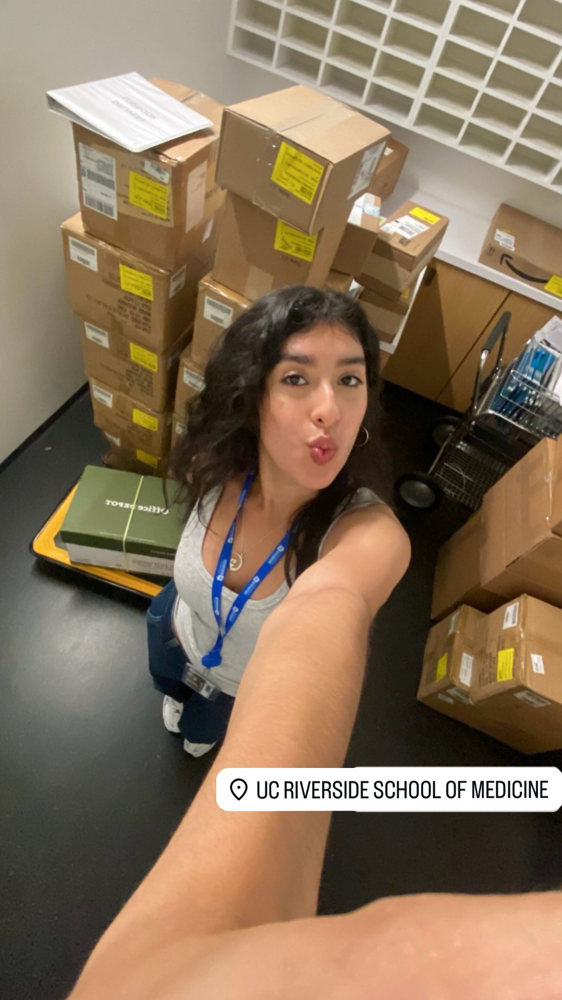
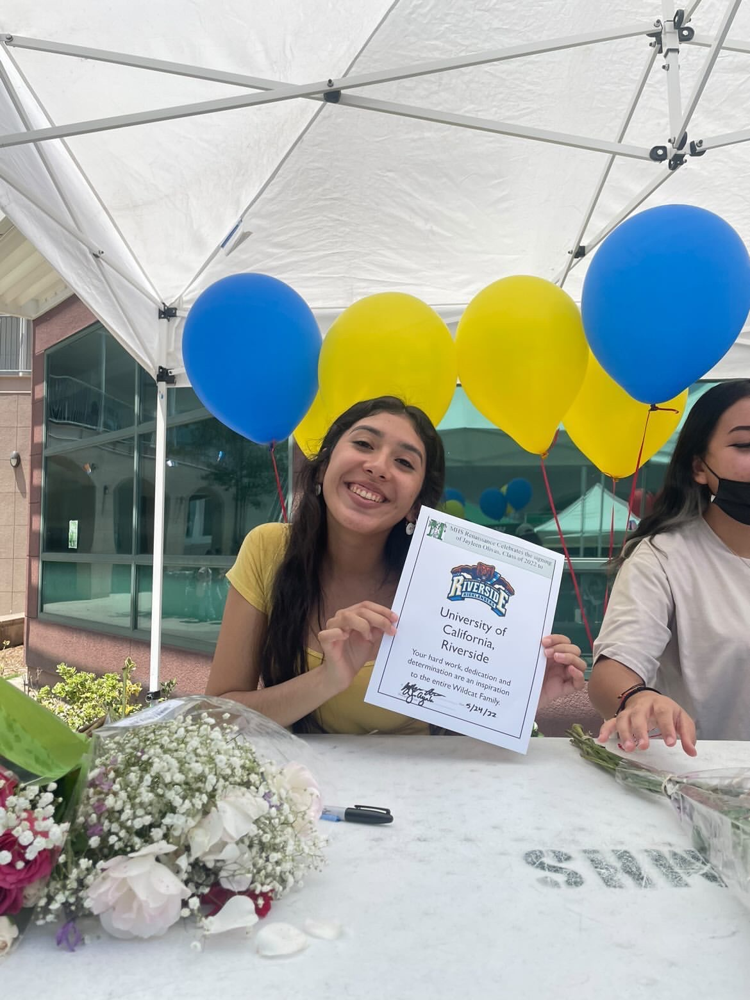
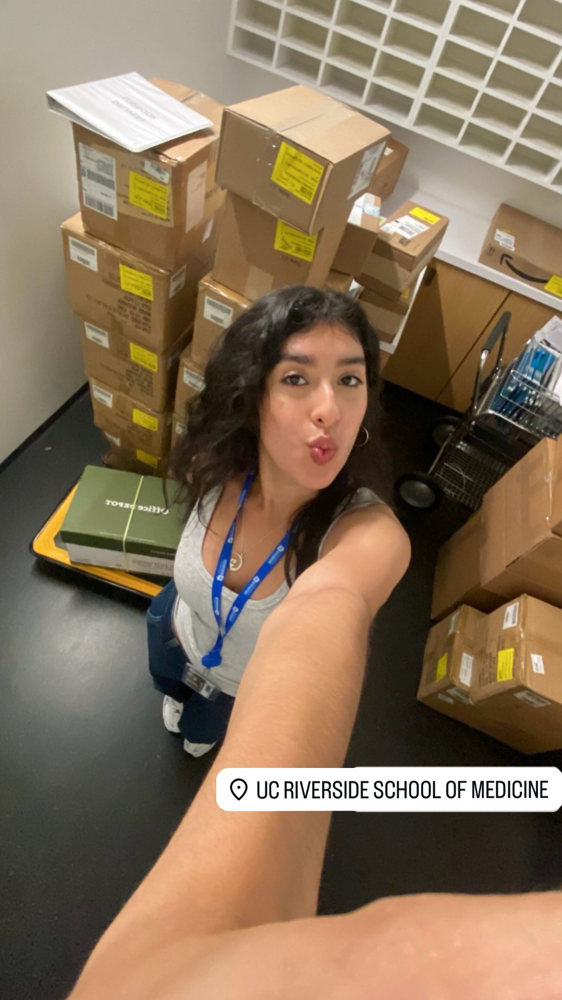

Jayleen Olivas
Growing up in Monrovia, CA, I am a proud first-generation student and the middle child in my family. Currently, I’m pursuing a Bachelor’s in Sociology with a minor in Spanish as a third-year student at the University of California, Riverside. My academic path is driven by a strong passion for social justice, which has influenced my goal of entering the field of criminology. Alongside my studies, I work part-time at the School of Medicine on UCR’s campus, where I’m developing valuable skills in organization, multitasking, and time management.
Bilingual in Spanish and English, I thrive in roles that require strong people skills, and I’m adept at connecting with others—a talent that has shaped my ambition to support communities in need. Whether it’s helping peers, family members, or colleagues, I’m always eager to lend my support, motivated by my belief in equality and fairness.
Outside of school and work, I find joy in traveling, spending time at the beach, and exploring new experiences with family. Reading and learning new things are also important to me, and they fuel my ambition to keep growing personally and professionally. My future goal is to pursue a Master’s in Criminology and secure a position in a District Attorney’s office as a Victim Services Specialist, where I can provide compassionate, dedicated support to those affected by crime and contribute to the pursuit of justice in a meaningful way.
Experience
Intern
• Assisted in the organization of events.
• Participated in brainstorming sessions to generate ideas for initiatives.
• Managed multiple errands simultaneously while maintaining accuracy and efficiency.
Facilities
• Proficient in managing phone calls, and directing visitors.
• Handled guest inquiries and concerns with a friendly and customer-focused approach.
• Managed incoming and outgoing mail, distributing to appropriate recipients efficiently.
Volunteer
• Volunteered for children's events at the library.
• Restocked and returned items to the correct shelf or storage locations.
• Taught first-time users how to utilize an online database.
Education
UC Riverside
Portfolio
 

 


